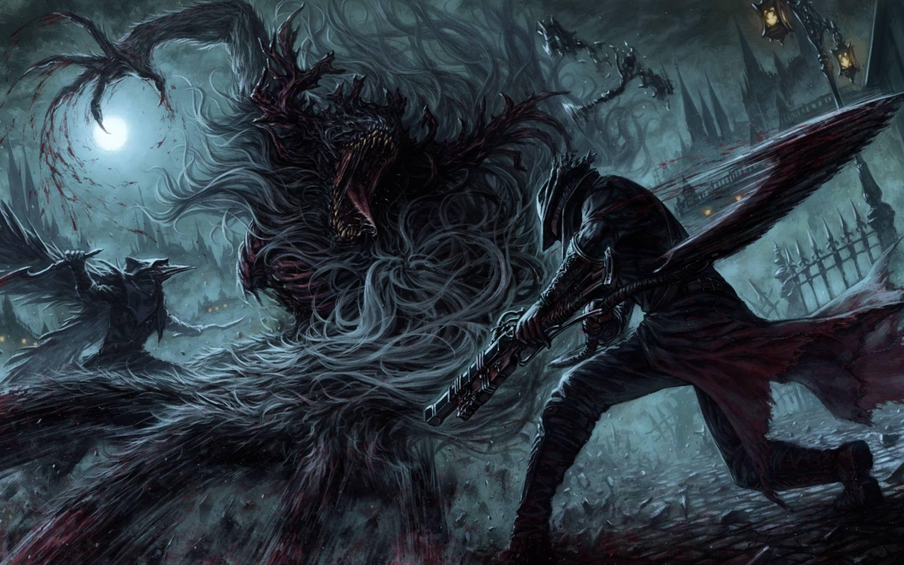

Hidetaka Miyazaki

Hidetaka Miyazaki es el director y diseñador principal de la saga Souls, que incluye Demon’s Souls, Dark Souls, Bloodborne, Sekiro: Shadows Die Twice y Elden Ring. Es el actual presidente de FromSoftware.
<Bloodborne es un videojuego de acción y rol desarrollado por FromSoftware y publicado por Sony Computer Entertainment en 2015 en exclusiva para PlayStation 4. El juego está ambientado en la ciudad gótica y plagada de pesadillas de Yharnam, donde los jugadores asumen el papel de un Cazador que busca una cura para una enfermedad extraña. La narrativa se desarrolla a través de la exploración del mundo y la interpretación de elementos del entorno, característica distintiva de los juegos de FromSoftware.
Ahora se incluye gratituamente en Windows para uso personal
Descargaral año
La suscribcion se renueva automaticamenbte a menos que se cancela en la
cuenta de Microsoft Ver terminos
Hidetaka Miyazaki es el director y diseñador principal de la saga Souls, que incluye Demon’s Souls, Dark Souls, Bloodborne, Sekiro: Shadows Die Twice y Elden Ring. Es el actual presidente de FromSoftware.
<